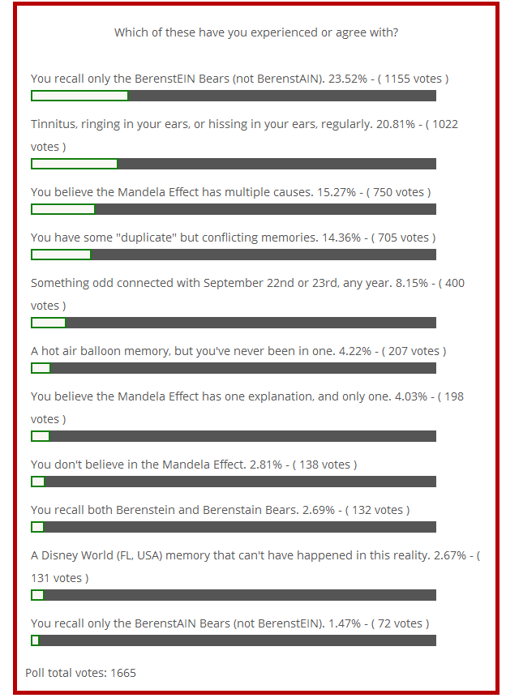

This one-week poll checked a few topics that have been raised in recent comments. It was concluded a little early, due to software issues. The survey results are far from scientific, but might provide some insights about the Mandela Effect.
Visitors were asked to check as many answers as applied to them. For answer-by-answer notes, scroll down to below the poll.
These were the results:

Item notes
The tinnitus (ringing or hissing in ears) answer is about a chronic or recurring sound in your ears that seems internally caused.
The hot air balloon memory seems real but unreal. You have the memory, but you’re also sure it never happened.
The September 22/23 issue is very general, but is about one of those two dates (any year), not another September date, or a 22/23 date in another month.
The “duplicate” memory answer is for people who recall two different versions of the same event, even if one seems far more real than the other.
Questions? Comments? Other answers or insights? Please share them in comments, below.
I remember Mandela dying in 2013, but the more i think of that date the more “wrong” it feels, I vaguely remember something happening in the early 80’s to mandela.. I want to say hunger strike leading to health problems.. but i dont know..The 1980’s death gets stronger the more i think of the 2013.. and the 2013 seems to fade a bit..It is very hard to describe
This might not exactly go here, but do you all realize many of the memories changed are American memories – I have been talking to English friends who never heard of the bears, or others and they never remember King Henry which would be the closest to the memory of their “nation” – but in talking to one last night – she admitted to it being A vampire or she remembered the word a lot – until that moment I don’t think she believed me.
Thanks for your comment (and your persistence with English friends). I realize that many of the reported alternate memories are American. That’s an important distinction. My theory is: the majority of my current readers seem to be Americans, so they’re reporting “American” memories, or events that received considerable attention in the American press. (One exception is geography. It seems to be of greater interest to people outside the USA.
I’m hoping something at this site opens the door to more international alternate memories.
Hi, Stephanie! Is there any chance you could find out if any of them recall riding in a hot-air balloon when they were kids? I’d love to know if this is an international memory.
Hi I am English and I have two impossible memories which are riding in a hot air balloon, and a helicopter landing just behind my house.
Just a heads up Fiona. The poll is asking me to vote and i already did.
Thanks, Anthony. In the options, a couple of things weren’t clear, and I erred on the side of people voting more than once (I hope they won’t) or possibly having to choose just one answer. It’s not the best software in the world, but — in an affordable price range — it was the best I could find.
Hello! In case you weren’t aware, the poll isn’t functioning…. says “bad request” whenever I try to submit. Have tried refreshing browser, and will check back later.
— Thank you as always for trying to help those of us who have confusing memories!
Jennifer M, thanks for your comment. I apologize for the frustration you must feel. Several people have reported difficulties with the poll. I’m not sure if it’s the database or the polling software, or something else. Obviously, over 800 people have been able to vote, so far, but I have no idea how many others reached error messages. For the past 24 hours, even I have had difficulty accessing the site, and moderating the comments has been like wading through molasses… tedious and slow.
Do try again, later. If it’s a server issue, it might simply be the time of day and how many people are catching up on the latest comments at MandelaEffect.com
Great poll, thank you, Fiona. I was able to vote without any problems.
One thing I wanted to add is that while I DON’T have a Disney World (FL, USA) memory that can’t have happened in this reality I do have a Disneyland (Anaheim, CA) memory that can’t have happened in this reality. I’m only mentioning this because it’s not in the poll, but at least related to one of the items listed.
Thank you.
(P.S., I am the same “Steve” in previous comments, as you will be able to see based on my email, but I added “M” to my name so that there is distinction, in the event there are other Steve’s posting comments).
It’s not “tinnitus” for me. I’ve had (occasionally, it’s not constant) what I’d consider tinnitus (from a medical standpoint), although rather than a “ringing” it’s more of a high pitched squeal (like a mosquito, but at a constant pitch). But always, reliably, if I am meditating or as I’m falling asleep, I can hear a sound that’s not sound. To describe it, I’d say it’s like a slightly detuned radio, on loud but through a wall. You know, where there’s talking or music, but it’s indistinct and covered by static…you get the feeling that if you could just listen closely enough, you could make out what the words are or what the song is…but focusing on it distorts it.
S Very similar to my experience, i called it a whistle hum.. Mine sometimes can change pitch slightly, to me theres a hum behind the whistle hard to tell because the whistle is no loud just sharp and persistant
Martin, that’s exactly how I’d describe mine when it’s annoying. Very sharp and annoying persistent. Today, I can barely hear it, which is a good thing. (Hmm… at some point, I might create a daily check-in to see if our tinnitus issues are on the same schedule.)
I voted for tinnitus because I know it’s what everyone calls it. But I agree, that it’s not tinnitus like my ears are going bad, it’s a high pitched tone, and sometimes I hear it actually change tones, like going higher or lower at certain points. It’s also so soft, and high, I wonder if some people don’t even know that they have it. I find it fascinating that almost all the other Berenstein Bears people have it too.
Huh. I didn’t vote for tinnitus because I went ‘no, that’s not something I experience’. I was quite proud to be bucking the trend.
But, in fact, I have it right now as I’m reading this. A soft, quiet high-pitched sort of white-noise whistle.
Admittedly, I *do* have a head cold at the moment, which is probably the reason. And it’s quiet and faint enough that I wouldn’t really notice.
But… odd, yes.
Nate, you should come back and post if you still have it after the cold. Also women can hear higher pitched noises then men, someone once told me it was so they would hear the baby cry at night, like a maternal thing.
So men may not be hearing it as well as women do, even if they are being affected by it, it might take more straining to hear it.
The hot air balloon thing is interesting. I recall reading that that sort of memory appeared in one of those daycare abuse panics from the 80’s, where the pushing by interrogators resulted in the kids fabricating some seemingly-impossible events. I feel like if this has affected a lot of ME experiencers, it might lend credence to my idea that the Mandela Effect is some kind of collective unconscious phenomenon where people are hardwired (or unintentionally enculturated) towards specific types of false memory.
Chris, if you’re looking for support for these as false memories, you’re at the wrong website. I’m not sure what you’re theory is (and not sure if it will simply annoy me, if you explain), but the hot air balloon issue is concerning.
I’m guessing that when Loftus published her results, several other amateur researchers tried similar experiments. (But, playing Devil’s Advocate with this — and perhaps using pretzel logic — I wonder if Loftus had her own alternate/impossible memory involving a hot air balloon, and that’s why she chose to see if it could be implanted in children.)
However, I don’t see any way that can be the answer for the majority of alternate memories here. The synchronicity of them is simply stunning, and the most logical “false memory” explanation would have to involve a massive programme to influence minds. That’s a conspiracy path I won’t travel.
The typical ‘false memory’ scenario of forced ‘implanted’ memory or social conditioning doesn’t seem to fit here, no. I think some ‘Mandelas’ are false alarms – just lack of personal interest or involvement in the subject matter. But not all. For some of these memories there seems no obvious physical causal mechanism that would make multiple people recall detailed, similar events that didn’t happen.
The only ‘physical’ explanation that would make sense would be some kind of EXTREMELY deterministic ‘glitch’ in neural processing that caused people to deform certain memories of an event in precisely the same way every time. But that explanation seems to fly in the face of everything we know about chaotic physical systems like neural networks, of which the brain is an especially chaotic example. These kind of systems don’t reproduce the same result in the same way at all – they amplify small differences, they’re deeply idiosyncratic, and everyone’s brain and social environment is different enough that we might expect memories to end up distorted in completely different ways in different people.
But I do wonder if there’s some kind of explanation along the lines of Jung’s collective unconscious. As if we have access to memories which aren’t exactly ours, and which somehow resonate or overlap with our own, and may perhaps be neither strictly ‘real’ nor ‘imaginary’ but midway between. This seems to be a well-known effect in the world of psychic mediumship and religion, and mediumship seems to be an inherent capability in the human mind, so why wouldn’t this sort of thing manifest in other ways?
It’s well established that people recall events differently – the famous ‘unreliable eyewitness’ problem. Also, personal memories appear to change over time. Both of these seem to be the same thing that the raw Mandela Effect data is saying! But is it that our brains are ‘faulty’ (in which case how can we trust any reasoning at all?), or is it that sometimes people literally witness *different* events, or jump to different universes, and the events were contradictory all along? I’m not sure the kinds of memory studies that have been done so far can answer that. All we can measure are the differences. Science can’t tell us which was ‘correct’, just which is the current best-fitting consensus reality. But what if reality itself is malleable? It’s unthinkable, yes, but is it any more of a logical contradiction than that our brains don’t work, so we should trust the output of those brains which tell us that they’re wrong? Both of these answers are problematic, and seem to open a universe of contradictions. So I’m wondering if there’s a third alternative.
In my case, as well as a handful of ‘huh. That’s weird. I thought for sure that happened differently but now I’m not sure…’ memories, some which are different from what the majority of people here or elsewhere recall, I seem to have at least one anomalous hazy memory of an event I know, consciously, I didn’t experience. (IE, watching the ‘Black Angel’ short before ‘Empire Strikes Back’ – I never saw the movie in cinemas, and that short wasn’t released publically until this year. I should not have had access to any information about this.) This ‘pseudomemory’ doesn’t – for me – make any sense in a ‘multiverse/timeline change’ model, but makes sense if perhaps I somehow have overlapped with *someone else’s* memory. Because the memory comes attached with emotion and also a sense of being a small child in a specific time and place. The memory is vague enough that it could be anyone,and there were probably millions of people who had that particular experience, so there’s a large ‘memory pool’ it could have been drawn from. But the one person whose memory I’m sure it could not have been, was me. I would be a very different person had I had that experience. So many events in my personal timeline would break.
It’s also possible it’s pure imagination – but it’s weird to me that I only experienced that sense of ‘remembering this memory’ on watching the short, which I’d never seen before. Why would it jolt my imagination in this particular way? Why did the memory arise as a unit, with emotion attached? It was not strictly like a real personal memory – there was distance to it – but not like a consciously imagined scene either. It felt like a third type of mental event.
I suspect – like UFOs, which (as Jacques Vallee pointed out fairly early on) seem to be a definitely real ‘phenomenon’ but not necessarily at all a case of ‘physical nuts and bolts crafts piloted by physical extraterrestrials’ – that there’s a continuum of explanations for something like Mandela Effect, and that the answer is somewhere in the gap between ‘random brain circuitry glitch’ and ‘external physical change’.
There’s a lot we don’t know about how the mind works – and there’s a lot of mounting evidence that the mind is not quite at all the same thing as the brain. The two are often in sync, but not always.
Thanks, Nate, you’ve certainly put considerable thought into this, and I agree with you on many points but — of course — not all.
I definitely agree that ME has more than one valid explanation. Some are perfectly normal. Most aren’t… or at least they aren’t concepts the average person considers “normal.” And, maybe Lewis Carroll was telling us something in Through the Looking Glass, or explaining to himself some of his own alternate memories, deja vu, and precognition…
Alice: I don’t understand you, it’s dreadfully confusing!
White Queen: That’s the effect of living backwards, it always makes one a little giddy at first—
Alice: Living backwards! I never heard of such a thing!
White Queen: But there’s one great advantage in it—that one’s memory works both ways.
Alice: I’m sure mine only works one way. I can’t remember things before they happen.
White Queen: It’s a poor sort of memory that only works backwards.
Alice: What sort of things do you remember best?
White Queen: Oh, things that happened the week after next.
You just have to look at the phrases an the stories he wrote.. “Going down the rabbit hole” its in pretty much common usage today, the fact that alice goes through to another world, via a portal. Dont forget Carroll was a Mathematician, and quite a good one ” Dodgson worked primarily in the fields of geometry, linear and matrix algebra, mathematical logic, and recreational mathematics, producing nearly a dozen books under his real name” he was a very clever man. Sylvie and Bruno is a darker much darker version of alice. With a M.E. eye you could say there are interesting connections in his works.. (he was also interested in ciphers and codes)
Brilliant, Martin! I don’t know why I didn’t connect all of this to the “rabbit hole” phrase that’s in popular use with this kind of phenomena. Also, I knew he’d worked with maths, but I didn’t realize he’d studied in areas that might well connect to M.E. Thank you!
Hi Fiona! Yes, I’m not convinced that ME is ‘normal’ in the narrow sense many people today think is normal. I suspect that reality is a lot wider than we often imagine.
I used to love Alice in Wonderland as a teenager. All the elaborate and precise logic jokes really appealed to me. That passage particularly, I think. Of course physicists like Richard Feynman have long pointed out that the laws of physics mostly run both ways, so there seems to be no particular reason why we should only remember the past and not the future. When you think about it from a strictly logical point of view, our memories only going ‘backward’ really is as strange as Charles Dodgson pointed out!
Another interesting thing to me is that science fiction (and some of the related ‘pulp’ genres formed in the 1920s-30s, like detective fiction and horror) drew a lot from ideas and research into (what we’d now call) psi and anomalous cognition around the turn of the century. Ideas which now have mostly been banned from discussion at the high end of academia. But there was maybe a 50 year period, late 1800s to mid-1900s, when high-ranking British and American academics could investigate spiritualism and hypnosis and dreams without being subjects of organised ridicule. And while fiction is fiction, it also acts as a kind of delayed-time filter; preserving ideas which have today dropped out of our cultural discourse and are in danger of being forgotten. It’s more useful than we realise.
Doctor Who, for example, often draws from the more ‘spooky’ side of ideas about time. And I remember even a Star Trek Next Generation episode based on the idea of precognitive dreaming! It had a thin sheen of physics over it, and featured Data the android having strange dreams which turned out to be from himself in the future. But I think such a story couldn’t even be written without a familiarity with either experience or some of the actual research on the topic (like J W Dunne’s 1927 book, An Experiment With Time) which most people today haven’t read.
the More you read about the man and not the rumour and innuendo’s the more you find similarities to a lot of us, above average intelligence in his case up to genius level, mathematics describing position of stars that he suffered from a few episodes of Migraines and possible Epileptic seizures . Carroll had at least one incident in which he suffered full loss of consciousness and awoke with a bloody nose, which he recorded in his diary and noted that the episode left him not feeling himself for “quite sometime afterward”
Fiona, I agree with you that the hot air balloon issue is concerning, especially for me considering I have that memory but I am certain more than anything else that I was never in a hot air balloon. While I find the rest of the aspects of ME completely fascinating, this one memory is puzzling and frightening to me at the same time. However, this probably isn’t due to ME at all, but it is related in that so many people share this alternate memory. I was shocked to see over 200 people in the poll results all sharing a similar hot air balloon memory. This issue more than any other causes concern for me, and a desperate need for answers to my questions about how so many of ‘us’ were given this alternate memory. Fiona, specifically from you I would like to hear what you think about this issue. Since there are so many now with this memory, do you believe that we were all part of some memory experiment without our knowledge?? Any explanations or theories would be helpful….
Skepticalbeliever, I was truly startled by the number of people with hot air balloon memories (that can’t be true), and the number with Disney-related memories (and they know those can’t be true in this reality, either).
I haven’t a clue how widespread the memory experiments were. I doubt that the Loftus team were the only ones testing the implantation of false memories, and I’m sure some copycats tried hot air balloon memories, as well.
But, even if there were many of them, the number of possible subjects that found this website and then found the poll… that’s very odd. I’d forgotten to link to the poll prominently in the sidebar of this site, so — unless someone went to the homepage — they probably didn’t realize they could participate.
I’m going to create an article for people to share exactly what their hot air balloon memories are, to see if they’re enough alike to have been programmed. I’ll also be looking for birth years (to see if many are in the same age group) and location during childhood. Of course, these survey efforts are ridiculously far from scientific, but — like you — the hot air balloon results surprised me.
My “gut feeling” is that this isn’t a case of mass social programming or unethical experimentation by Loftus admirers. I don’t have a better answer at the moment, but I don’t think the false memory experiments could have been that widespread.
Fiona, thanks for your reply about the hot air balloon memory and the poll results. I also am glad to hear that you are starting a page for that memory. I’m very curious to see if there are any common links among us that share the experience.
I have a couple of additional thoughts regarding this peculiar memory. I wonder if perhaps this was done thru a false memory implantion experiment, then maybe this was done thru some type of pharmaceutical. Maybe it was included in a commonly taken medication that when taken over time implanted the false memory. This could explain the large number of people claiming to have this memory
Also, another possibility in regards to the hot air ballon memory. This could be tied to ME in that maybe this was a large scale memory experiment done in another reality and somehow the implanted memory stays with us no matter which timeline or reality we jump to.
I also wonder why most of the comments that have described it with memories of great fear. I haven’t read any comments where someone had a pleasant false hot air balloon memory. Adds more to this mystery I think
Good points, Skepticalbeliever!
My impression of hot air balloons seems to be mostly pleasant; but I’m not sure that my memories are false.
Other than a childhood memory of watching balloons overhead in the late 1970s or early 80s (part scary, part exciting), I have a vague memory that around 1990 I did go in a trip in one, with my family; but my impression of that is of being completely surprised by how quiet and peaceful it was – not even wind noise! – and how much I wasn’t afraid. Also because my early memory was of how loud the gas burner was; but up close, it wasn’t nearly as loud as I expected.
If it’s a false memory, it’s not I think part of the same cluster that others report here. But 1990 was a year of exploration and trying new things for our family, so it seems very likely that it we really did this.
That’s crazy! I always felt like something happened to me on September 22. Like maybe it was an important date such as anniversary, birth, etc.
I feel the same about Sept 23. My whole life on that day I have that nagging feeling I’m forgetting something important like someone’s birthday or anniversary but nobody I know has that birthday or anniversary
Tinnitus.We are vibrating at an E frequency!!!
Listen to the viola at an E not and compare it to A note. The E is a higher frequency than the A. I’m just a little shocked after having family member play this chord and it makes a lot of sense.
We are attempting to work at a vibrational field lower than the one we are currently on (Berenstain).
I just listened to the A and E tuning videos on youtube, and mine sounds more like ‘a’ though I always remember the Berenstein Bears. But the high pitched notes sometimes change tones, the next time I notice the change, I may look up the videos again and compare to see what’s going on with it.
Mine has been stayng at the same sound for years now. However, I do remember when I was younger it sounded more like a hum. Now its that high-pitched E.
To add on to my previous comment, I just heard the tone switch on me and it went to the higher tone, but it seems to go between the ‘A’ and the ‘E’.
Heya. Since the poll was closed early, is there any chance that it might be re-opened for a day or two for those who missed it?
I wish I could, Skiltaire, but the plugin — and its database — have been removed. It looks like it was part of a plugin conflict that was slowing the site down, and causing odd stickiness to some comments.